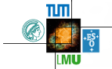
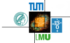

ISM-SPP school, Freising, 26th - 30th October 2015
Programme
Monday 26th October
| 14:20 - 15:50 |
C++ primer part I (Optional) |
| 15:50 - 16:30 |
Tea/coffee break |
| 16:30 - 18:00 |
C++ primer part II (Optional) |
| 18:00 - 18:30 |
Registration |
Tuesday 27th October
| 9:00 - 9:45 |
Registration & Welcome |
| 9:45 - 10:30 |
Tour of GANDALF : Physics & features |
| 10:30 - 11:00 |
Tea/coffee break |
| 11:00 - 11:45 |
SPH algorithms in GANDALF |
| 11:45 - 12:30 |
Installation & compilation : part I |
| 12:30 - 14:20 |
Lunch |
| 14:20 - 15:05 |
Installation & compilation : part II |
| 15:05 - 15:50 |
Running simulations in GANDALF : part I |
| 15:50 - 16:30 |
Tea/coffee break |
| 16:30 - 17:15 |
Running simulations in GANDALF : part II |
| 17:15 - 18:00 |
Doing units and scaling right |
Wednesday 28th October
| 9:00 - 9:22 |
Seamus Clarke - On the Global Collapse of Filaments |
| 9:23 - 9:45 |
Guangxing Li - Gravitational focusing and edge effects in molecular clouds |
| 9:45 - 10:30 |
Godunov methods in GANDALF |
| 10:30 - 11:00 |
Tea/coffee break |
| 11:00 - 11:45 |
Microphysics and chemistry in hydrodynamical numerical simulations : general aspects |
| 11:45 - 12:30 |
Generating initial conditions via C++ : part I |
| 12:40 - 14:20 |
Lunch |
| 14:20 - 15:05 |
Generating initial conditions via C++ : part II |
| 15:05 - 15:50 |
Radiation transport algorithms in GANDALF |
| 15:50 - 16:30 |
Tea/coffee break |
| 16:30 - 17:15 |
Using GANDALF via Python; scripts and analysis : part I |
| 17:15 - 18:00 |
Using GANDALF via Python; scripts and analysis : part II |
Thursday 29th October
| 9:00 - 9:45 |
Microphysics and chemistry in hydrodynamical numerical simulations : the Krome package |
| 9:45 - 10:30 |
Dust algorithms |
| 10:30 - 11:00 |
Tea/coffee break |
| 11:00 - 11:22 |
Oliver Lomax - Smoothed Particle Monte Carlo Radiative Transfer |
| 11:23 - 11:45 |
Eric Pellegrini - Massive Star feedback: Convergence between observations and simulations |
| 11:45 - 12:30 |
Generating initial conditions via Python : part I |
| 12:30 - 14:20 |
Lunch |
| 14:20 - 15:05 |
Generating initial conditions via Python : part II |
| 15:05 - 15:50 |
Adding new physics classes into GANDALF : part I |
| 15:50 - 16:30 |
Tea/coffee break |
| 16:30 - 18:00 |
Adding new physics classes into GANDALF : part II |
Friday 30th October
| 9:00 - 09:45 |
GANDALF with openMP/MPI |
| 9:45 - 10:30 |
N-body algorithms in GANDALF |
| 10:30 - 11:10 |
Tea/coffee break |
| 11:10 - 11:55 |
Discussion; end of school talk |
 
